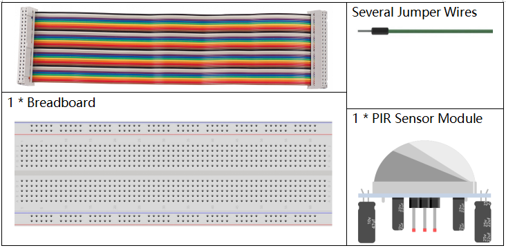
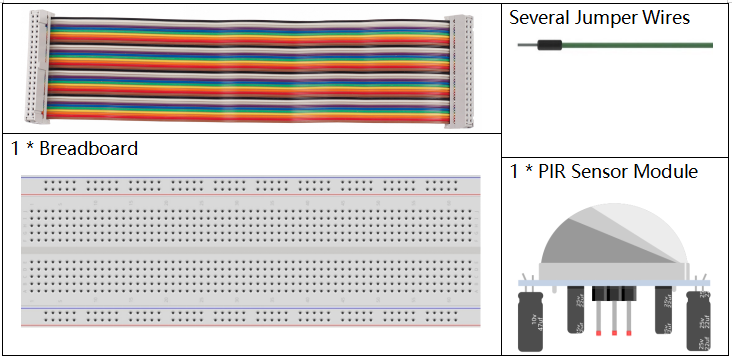
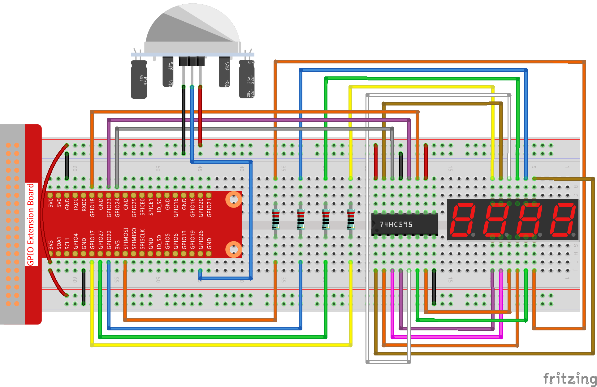

Note
Hello, welcome to the SunFounder Raspberry Pi & Arduino & ESP32 Enthusiasts Community on Facebook! Dive deeper into Raspberry Pi, Arduino, and ESP32 with fellow enthusiasts.
Why Join?
Expert Support: Solve post-sale issues and technical challenges with help from our community and team.
Learn & Share: Exchange tips and tutorials to enhance your skills.
Exclusive Previews: Get early access to new product announcements and sneak peeks.
Special Discounts: Enjoy exclusive discounts on our newest products.
Festive Promotions and Giveaways: Take part in giveaways and holiday promotions.
👉 Ready to explore and create with us? Click [here] and join today!
3.1.1 Counting Device
Introduction
Here we will make a number-displaying counter system, consisting of a PIR sensor and a 4-digit segment display. When the PIR detects that someone is passing by, the number on the 4-digit segment display will add 1. You can use this counter to count the number of people walking through the passageway.
Components
 

Schematic Diagram
T-Board Name |
physical |
wiringPi |
BCM |
GPIO17 |
Pin 11 |
0 |
17 |
GPIO27 |
Pin 13 |
2 |
27 |
GPIO22 |
Pin 15 |
3 |
22 |
SPIMOSI |
Pin 19 |
12 |
10 |
GPIO18 |
Pin 12 |
1 |
18 |
GPIO23 |
Pin 16 |
4 |
23 |
GPIO24 |
Pin 18 |
5 |
24 |
GPIO26 |
Pin 37 |
25 |
26 |
Experimental Procedures
Step 1: Build the circuit.
{kind=link}
For C Language Users
Step 2: Go to the folder of the code.
cd ~/davinci-kit-for-raspberry-pi/c/3.1.1/
Step 3: Compile the code.
gcc 3.1.1_CountingDevice.c -lwiringPi
Step 4: Run the executable file.
sudo ./a.out
After the code runs, when the PIR detects that someone is passing by, the number on the 4-digit segment display will add 1.
There are two potentiometers on the PIR module: one is to adjust sensitivity and the other is to adjust the detection distance. To make the PIR module work better, you You need to turn both of them counterclockwise to the end.
Note
If it does not work after running, or there is an error prompt: "wiringPi.h: No such file or directory", please refer to C code is not working?.
Code Explanation
void display()
{
clearDisplay();
pickDigit(0);
hc595_shift(number[counter % 10]);
clearDisplay();
pickDigit(1);
hc595_shift(number[counter % 100 / 10]);
clearDisplay();
pickDigit(2);
hc595_shift(number[counter % 1000 / 100]);
clearDisplay();
pickDigit(3);
hc595_shift(number[counter % 10000 / 1000]);
}
First, start the fourth segment display, write the single-digit number. Then start the third segment display, and type in the tens digit; after that, start the second and the first segment display respectively, and write the hundreds and thousands digits respectively. Because the refreshing speed is very fast, we see a complete four-digit display.
void loop(){
int currentState =0;
int lastState=0;
while(1){
display();
currentState=digitalRead(sensorPin);
if((currentState==0)&&(lastState==1)){
counter +=1;
}
lastState=currentState;
}
}
This is the main function: display the number on the 4-digit segment display and read the PIR value. When the PIR detects that someone is passing by, the number on the 4-digit segment display will add 1.
For Python Language Users
Step 2: Go to the folder of the code.
cd ~/davinci-kit-for-raspberry-pi/python/
Step 3: Run the executable file.
sudo python3 3.1.1_CountingDevice.py
After the code runs, when the PIR detects that someone is passing by, the number on the 4-digit segment display will add 1.
code
Note
You can Modify/Reset/Copy/Run/Stop the code below. But before that, you need to go to source code path like davinci-kit-for-raspberry-pi/python.
import RPi.GPIO as GPIO
import time
sensorPin = 26
SDI = 24
RCLK = 23
SRCLK = 18
placePin = (10, 22, 27, 17)
number = (0xc0, 0xf9, 0xa4, 0xb0, 0x99, 0x92, 0x82, 0xf8, 0x80, 0x90)
counter = 0
def clearDisplay():
for i in range(8):
GPIO.output(SDI, 1)
GPIO.output(SRCLK, GPIO.HIGH)
GPIO.output(SRCLK, GPIO.LOW)
GPIO.output(RCLK, GPIO.HIGH)
GPIO.output(RCLK, GPIO.LOW)
def hc595_shift(data):
for i in range(8):
GPIO.output(SDI, 0x80 & (data << i))
GPIO.output(SRCLK, GPIO.HIGH)
GPIO.output(SRCLK, GPIO.LOW)
GPIO.output(RCLK, GPIO.HIGH)
GPIO.output(RCLK, GPIO.LOW)
def pickDigit(digit):
for i in placePin:
GPIO.output(i,GPIO.LOW)
GPIO.output(placePin[digit], GPIO.HIGH)
def display():
global counter
clearDisplay()
pickDigit(0)
hc595_shift(number[counter % 10])
clearDisplay()
pickDigit(1)
hc595_shift(number[counter % 100//10])
clearDisplay()
pickDigit(2)
hc595_shift(number[counter % 1000//100])
clearDisplay()
pickDigit(3)
hc595_shift(number[counter % 10000//1000])
def loop():
global counter
currentState = 0
lastState = 0
while True:
display()
currentState=GPIO.input(sensorPin)
if (currentState == 0) and (lastState == 1):
counter +=1
lastState=currentState
def setup():
GPIO.setmode(GPIO.BCM)
GPIO.setup(SDI, GPIO.OUT)
GPIO.setup(RCLK, GPIO.OUT)
GPIO.setup(SRCLK, GPIO.OUT)
for i in placePin:
GPIO.setup(i, GPIO.OUT)
GPIO.setup(sensorPin, GPIO.IN)
def destroy(): # When "Ctrl+C" is pressed, the function is executed.
GPIO.cleanup()
if __name__ == '__main__': # Program starting from here
setup()
try:
loop()
except KeyboardInterrupt:
destroy()
Code Explanation
Based on 1.1.5 4-Digit 7-Segment Display, this lesson adds PIR module to change the automatic counting of lesson 1.1.5 into count detecting. When the PIR detects that someone is passing by, the number on the 4-digit segment display will add 1.
def display():
global counter
clearDisplay()
pickDigit(0)
hc595_shift(number[counter % 10])
clearDisplay()
pickDigit(1)
hc595_shift(number[counter % 100//10])
clearDisplay()
pickDigit(2)
hc595_shift(number[counter % 1000//100])
clearDisplay()
pickDigit(3)
hc595_shift(number[counter % 10000//1000])
First, start the fourth segment display, write the single-digit number. Then start the third segment display, and type in the tens digit; after that, start the second and the first segment display respectively, and write the hundreds and thousands digits respectively. Because the refreshing speed is very fast, we see a complete four-digit display.
def loop():
global counter
currentState = 0
lastState = 0
while True:
display()
currentState=GPIO.input(sensorPin)
if (currentState == 0) and (lastState == 1):
counter +=1
lastState=currentState
This is the main function: display the number on the 4-digit segment display and read the PIR value. When the PIR detects that someone is passing by, the number on the 4-digit segment display will add 1.
Phenomenon Picture